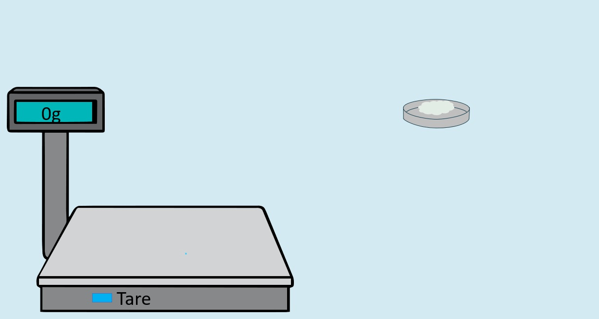

Determination of Magnesium Oxide
Step 4: Weighing and Calculation
About this step:
In this final step, we will weigh accurately to obtain the mass of magnesium pyrophosphate formed and use stoichiometric relationships to calculate the percentage of magnesium oxide (MgO) in the original cement sample.
The dried precipitate is MgNH₄PO₄. We'll use the analytical balance to determine its exact mass, then apply the stoichiometric conversion factor to find the equivalent amount of MgO.
Stoichiometric relationship:
MgNH₄PO₄ → MgO
Molecular weights: Mg₂P₂O₇ = 137.3 g/mol, MgO = 56.3 g/mol
Conversion factor: (56.3/155.5) = 0.362
Click on the analytical balance to weigh the precipitate first, then proceed with the calculation.


üëá